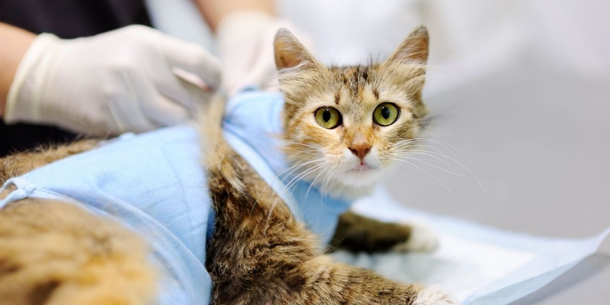

Neutering is an operation to prevent female cats from getting pregnant and male cats from making females pregnant.
Neutering is the general term for the operation that prevents all cats from being able to mate and produce kittens. It is also known as spaying or castrating. Spaying is the word used to describe a female cat getting neutered, and castrating is the word used to describe a male cat getting neutered.
Cats can be neutered at any age, but we’d recommend getting your kitten neutered at around four months old. This is because female cats can start getting pregnant from around this age. To prevent any unwanted litters, it’s important to get them neutered as early as possible. An increasing number of vets offer neutering at four months old or younger.
Until your cat is neutered, keep them indoors and separated from any other unneutered cats. Remember, cats aren’t selective about who they breed with and will even breed with their siblings and parents!
Neutering prevents unwanted litters of kittens and helps to prevent more cats being born than there are homes available. Cats Protection champions neutering as a way to create a balanced cat population to ensure that every cat has a safe and happy home.
Cats are effective breeders, and female cats can get pregnant from around four months old. Making sure your kitten is neutered is particularly important.
As well as preventing unwanted kittens, neutering your cat has plenty of health benefits too.
Neutering your cat is a quick, routine operation, and your vet will likely ask you to drop your cat off in the morning and collect them later the same day.
Your cat will have a general anaesthetic, so ask your vet about when to feed them before the procedure. It is advisable to keep them indoors the night before; don’t forget to give them a litter tray.
When female cats are spayed, their ovaries and womb are removed. After the operation, they will have a small, shaved area on their side or belly. This fur will grow back in a few weeks. They will also have stitches, and if these aren’t dissolvable, they will be taken out by the vet around 10 days later.
When male cats are castrated, their testicles are removed. After the operation, they may have a shaved area just under their tail, and the fur will grow back in a few weeks. They may also have two small surgical wounds where the testicles were removed. Stitches aren’t used, and the wounds generally heal in around 10 days.
Effective pain relief means that the process is painless. Your cat may also come home with some pain relief medication.
Your cat will normally be on their feet within hours of the operation. It’s normal for them to be a little wobbly, tired or even excitable when they come home after being under anaesthetic, so keep an eye on them. By the next day, your cat should be eating and feeling much brighter.
Young cats recover much more quickly than older cats, so it’s best to get your cat neutered as early as possible. Male cats also recover more quickly than females. Male cats may be up and about within minutes of the operation.
Your cat’s wound should completely heal in around 10 days. Make sure you take them for any check-up appointments and that your vet is happy with their healing.
When your cat comes home, there are a few things you can do to help them while they recover, including: